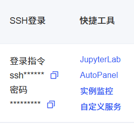
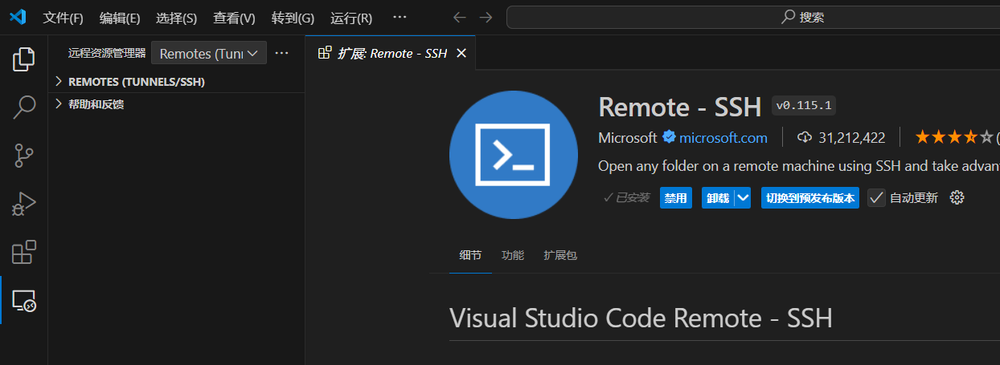
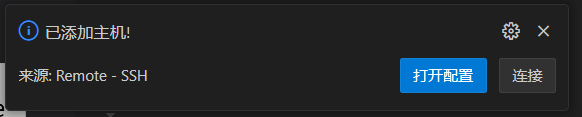
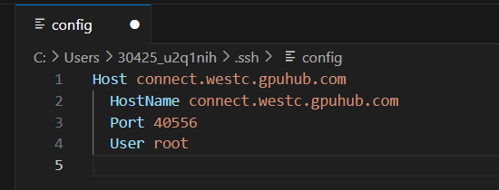
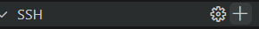
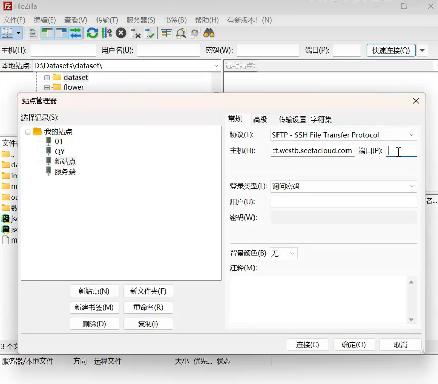
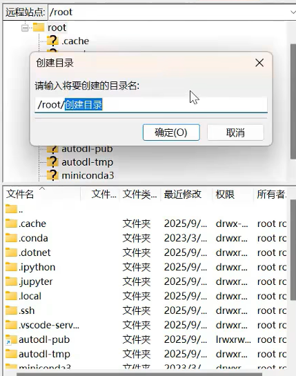

云算力平台(GPU)跑项目 · 远程连接 / SSH
我使用的是 AutoDL 算力云，先选定一个合适的容器实例，记得先无卡开机，比直接开机便宜很多，在跑项目的时候再改成有卡开机就行了。
在云算力平台租用 GPU
我使用的是 AutoDL 算力云，先选定一个合适的容器实例，记得先无卡开机，比直接开机便宜很多，在跑项目的时候再改成有卡开机。

可以从中选择使用 SSH 登录或者 Jupyter。
使用 Microsoft VS Code
配置远程连接
首先在扩展里下载 Remote - SSH，左侧栏选择最后一个新出现的图标（远程资源管理器）。最上方选择远程（隧道 / SSH），默认选中的话不用管。

点击打开配置：

Host是主机名，可以自行修改；HostName是 IP 地址，Port是端口号，User是用户名。

点击加号复制粘贴登录指令 ssh xxxxx：

然后输入密码，就能连上了。启用的是 Linux 命令，可以使用 conda list 查看包，ls 查看文件列表。这样就连接成功了。
传输项目
我使用的是 FileZilla 来传输，下载链接如下，一路点第一个按钮就能下载成功：
FileZilla — The free FTP solution
下载好了后，左上角选择站点管理器，创建新站点，按照所提供的内容填写好了后，输入密码就连接成功了。

选中 root，右键点击创建目录并进入，命名好目录后，将本地文件拖入目录里传输进去就成功了。

以上就是使用 Microsoft VS Code，在云算力平台 SSH 远程连接并且传输文件的步骤。